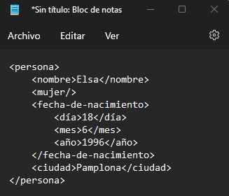
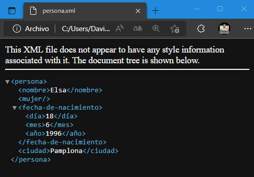

Como se comentó en la Unidad anterior, para la creación de lenguajes de marcas, podemos usar cualquier editor de textos. Por ejemplo, el bloc de notas, Eclipse, SublimeText, Notepad++, o cualquier otro editor de lenguajes.
Si en cualquiera de ellos escribimos:
|  |  |
Como se puede ver, a la izquierda de los elementos que tienen hijos, en este caso persona y fecha_de_nacimiento, aparece un pequeño triángulo. Por otra parte, el elemento persona es el único que tiene un atributo.